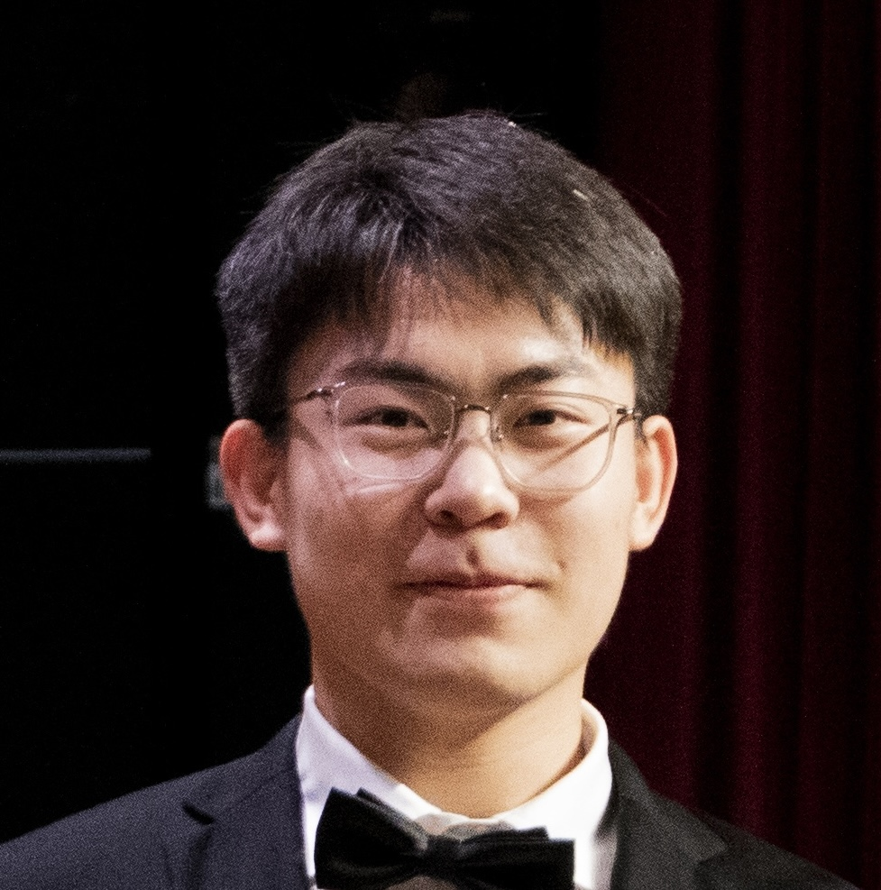

I am a Statistics PhD student (ASU) and previously a Data Analyst in the Qu Lab at the Department of Statistics, University of California, Irvine, mentored by Professor Annie Qu. I build applied ML/DS systems with real users and data.
I developed an EMA data collection app for a longitudinal study—now tracking 110k+ events (and growing)—and integrated Oura Ring streams, data quality checks, and cohort dashboards. I also curated a 2024 U.S. election corpus (X/Twitter) and assembled a 1.7M-abstract arXiv dataset for topic modeling.
I completed my M.S. in Electrical and Computer Engineering at The Henry Samueli School of Engineering, UCI. Before that, I earned my B.Eng. in Automation at the East China University of Science and Technology (ECUST) in the School of Information Science and Engineering, advised by Professor Wangli He.
Thanks for visiting!